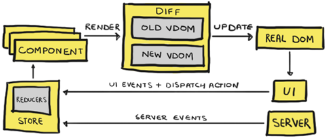

01Flujo de datos unidireccional
Los datos y el estado fluyen del componente padre hacia sus hijos mediante props. Para comunicar una acción del hijo al padre, el padre puede pasar una función callback como prop.
El padre es propietario del estado
import { useState } from "react";
function BotonAgregar({ onAgregar }) {
return <button onClick={onAgregar}>Agregar al carrito</button>;
}
function Carrito() {
const [cantidad, setCantidad] = useState(0);
function agregarProducto() {
setCantidad(actual => actual + 1);
}
return (
<section>
<p>Productos en el carrito: {cantidad}</p>
<BotonAgregar onAgregar={agregarProducto} />
</section>
);
}
export default Carrito;El hijo no modifica el estado del padre: invoca la callback recibida y el padre actualiza su propio estado.
02Props y estado
| Dato | Quién lo controla | Cambia y vuelve a renderizar |
|---|---|---|
| Props | El componente padre | El hijo las recibe como entradas de solo lectura. |
| Estado | El componente que lo declara | Sí, al actualizarse React vuelve a renderizar. |
Props como entrada y estado local
import { useState } from "react";
function Producto({ nombre }) {
const [seleccionado, setSeleccionado] = useState(false);
return (
<article>
<h2>{nombre}</h2>
<p>{seleccionado ? "Agregado" : "Disponible"}</p>
<button onClick={() => setSeleccionado(valor => !valor)}>
{seleccionado ? "Quitar" : "Agregar"}
</button>
</article>
);
}
function App() {
return <Producto nombre="Bolsa reutilizable" />;
}Las props no se modifican desde Producto; seleccionado es estado interno que se actualiza con su setter.
03Componentes y Redux
El diagrama de la lectura muestra cómo se relacionan los componentes de React, Redux y el DOM en respuesta a cambios e interacciones.

El flujo puede resumirse así:
- Un evento de la interfaz despacha una acción.
- El reducer recibe el estado actual y la acción, y devuelve un estado nuevo.
- El store conserva el estado de la aplicación.
- Los componentes leen el estado y renderizan la interfaz.
- Las props pasan los datos del padre a los componentes hijos.
// Ejemplo conceptual de una acción Redux
const accion = {
type: "carrito/productoAgregado",
payload: { id: 1, nombre: "Bolsa reutilizable" }
};El código de acción es ilustrativo; se desarrolla el diagrama y los principios de Redux, pero no proporciona un bloque de implementación completo.
04Reducer con useReducer
Un reducer es una función pura que calcula el estado siguiente a partir del estado actual y una acción.
import { useReducer } from "react";
const estadoInicial = { contador: 0 };
function reducer(estado, accion) {
switch (accion.type) {
case "incrementar":
return { contador: estado.contador + 1 };
case "decrementar":
return { contador: estado.contador - 1 };
default:
throw new Error(`Acción desconocida: ${accion.type}`);
}
}
function Contador() {
const [estado, dispatch] = useReducer(reducer, estadoInicial);
return (
<div>
<p>Contador: {estado.contador}</p>
<button onClick={() => dispatch({ type: "incrementar" })}>
Incrementar
</button>
<button onClick={() => dispatch({ type: "decrementar" })}>
Decrementar
</button>
</div>
);
}
export default Contador;El estado se reemplaza por uno nuevo; no se modifica directamente.
05Funciones en React
Función de componente
function MiComponente() {
return <h1>Universidad Siglo 21</h1>;
}
export default MiComponente;Componente con arrow function
const MiComponente = () => {
return <h1>Universidad Siglo 21</h1>;
};
export default MiComponente;Manejador de evento
function MiComponente() {
const manejarClick = () => {
alert("Botón presionado");
};
return <button onClick={manejarClick}>Clic aquí</button>;
}
export default MiComponente;Función de utilidad
const calcularSuma = (a, b) => a + b;
function MiComponente() {
const resultado = calcularSuma(5, 10);
return <h1>La suma es: {resultado}</h1>;
}
export default MiComponente;06Crear un proyecto React
Se propone crear un proyecto desde una IDe (ejemplo: VS Code) y verificar que Node.js y npm estén disponibles.
Verificar Node.js y npm
node -v
npm -vComando de creación citado
npx create-react-app demo-reactCreate React App está en modo de mantenimiento y no se recomienda para proyectos nuevos. Para un proyecto nuevo, React recomienda herramientas como Vite.
Ejemplo actual con Vite
npm create vite@latest demo-react -- --template react
cd demo-react
npm installEl comando con Vite es una alternativa actual.
07Estructura del proyecto
Se muestra un proyecto generado con Create React App. Una estructura típica incluye:
demo-react/
├── public/
│ ├── index.html
│ └── favicon.ico
├── src/
│ ├── components/
│ │ ├── Header.js
│ │ └── Footer.js
│ ├── App.css
│ ├── App.js
│ ├── index.css
│ └── index.js
├── package.json
└── README.mdpackage.json registra dependencias y scripts. src/index.js es el punto de entrada habitual y renderiza App.
08Ejecutar y probar
Iniciar el servidor de desarrollo
npm startCon Create React App, el servidor suele estar disponible en http://localhost:3000. En Vite, el script de desarrollo normalmente se inicia con:
npm run devEl comando depende de los scripts definidos en package.json.
09App: cambiar el color de fondo
El ejemplo citado usa useState para conservar el color actual y cambiarlo al pulsar un botón.
src/App.js
import React, { useState } from "react";
import "./App.css";
function App() {
const [color, setColor] = useState("#ffffff");
const cambiarColor = () => {
const nuevoColor = `#${Math.floor(Math.random() * 16777215)
.toString(16)
.padStart(6, "0")}`;
setColor(nuevoColor);
};
return (
<main className="App" style={{ backgroundColor: color }}>
<h1>Cambiar color de fondo</h1>
<button onClick={cambiarColor}>Cambiar color</button>
</main>
);
}
export default App;src/App.css
.App {
min-height: 100vh;
display: flex;
justify-content: center;
align-items: center;
flex-direction: column;
text-align: center;
}
button {
padding: 10px 20px;
margin-top: 20px;
font-size: 16px;
cursor: pointer;
}Se corrige el espacio accidental de la ruta de importación ./App.css y se completa el color hexadecimal con seis dígitos.
10Repaso
El flujo de datos en React es bidireccional.
Respuesta: falso. Las props fluyen del padre al hijo; el hijo puede solicitar cambios en el padre mediante callbacks que este le pasa como props.
Callback
function Boton({ onConfirmar }) {
return (
<button onClick={() => onConfirmar("Pedido confirmado")}>
Confirmar pedido
</button>
);
}